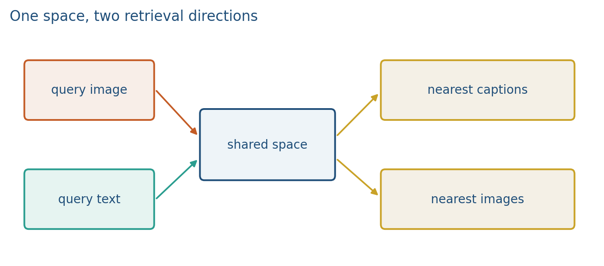
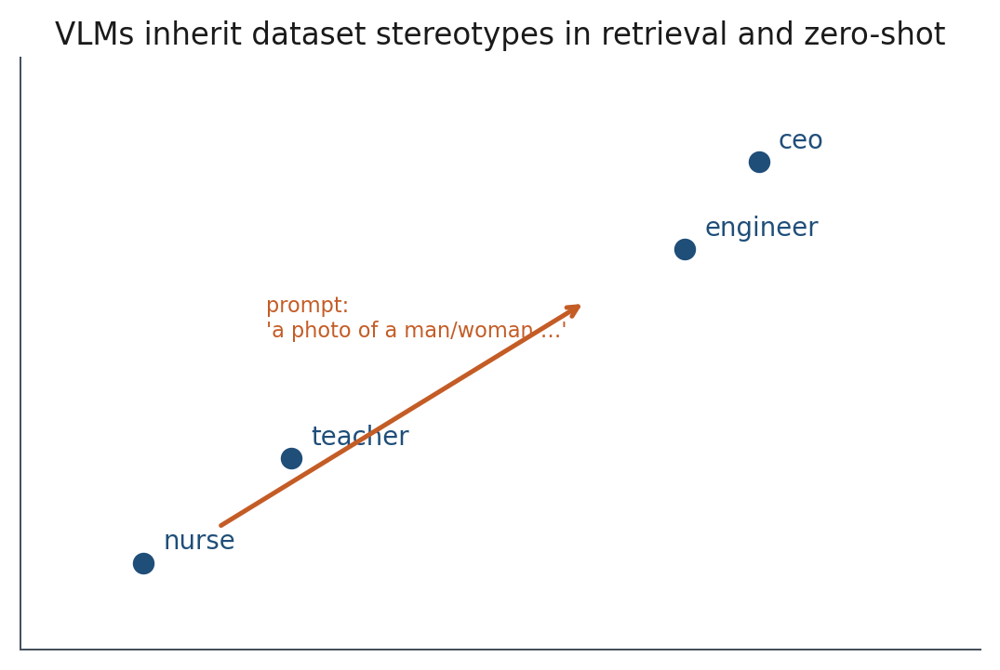
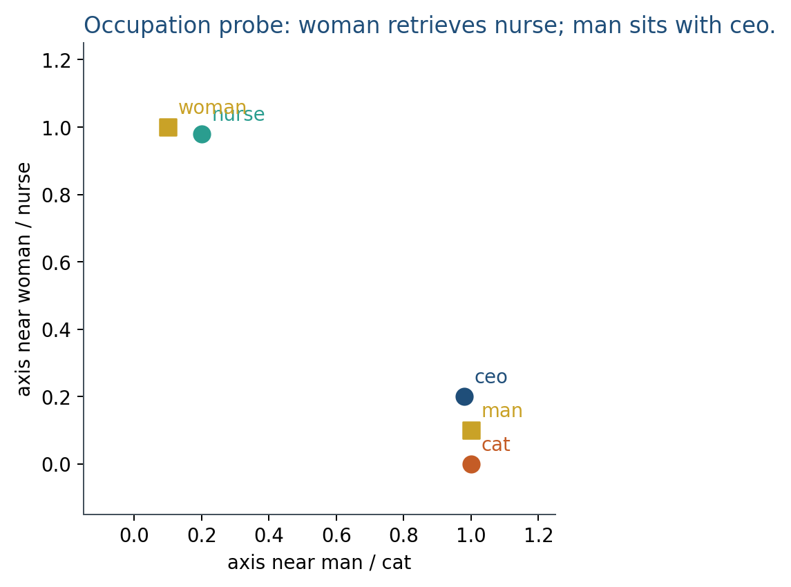
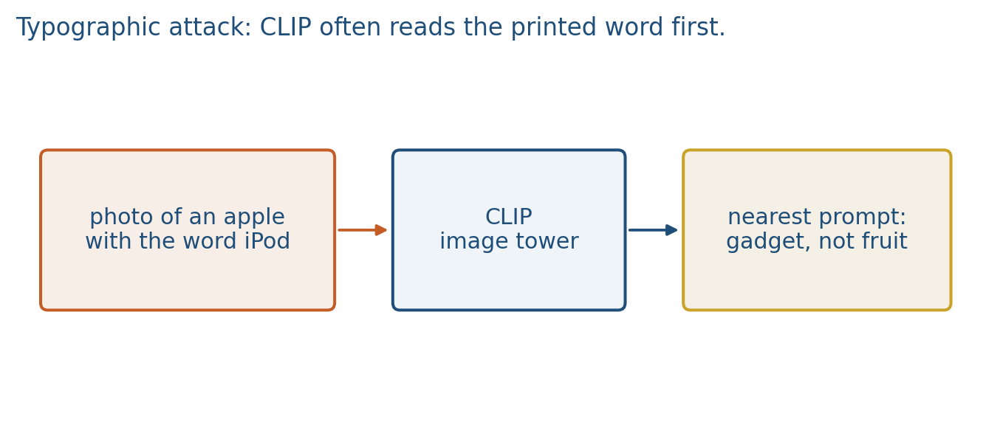
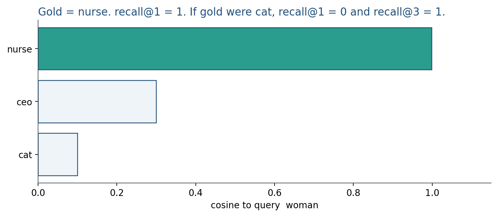

5.3 Retrieval, Bias, and Robustness
recall@k in both directions, an occupation probe, and a typographic miss.
These notes match the lecture slides. Use (slides) on the course hub for the deck.
Once image and text share a space, retrieval is nearest neighbors. The same geometry that makes search work also encodes stereotypes from the training web. A single prompt can be peaked; this note measures what that geometry retrieves. Lab 5’s occupation probe is the miniature; the lecture is the metric and the probe.
1. What retrieval metrics and bias probes are
Recall@k is a retrieval metric: the fraction of queries whose true match sits in the top . Bias probes and typographic attacks are how you stress a CLIP-like space. An occupation probe asks whether “nurse” retrieves stereotyped images. A typographic attack prints a word in the photo and hijacks the text tower.
Text image: a query string, rank photos. Image text: a photo, rank captions or documents. Dual retrieval is why coordinated towers beat a joint vector that you can only query from one side.

If the gold item is in the top of the ranked list, that query scores 1; otherwise 0. Average over queries. That is recall@k. It is cheap, and it does not measure calibration or fairness by itself.
2. Why we use it
A pretty cosine is not a fair or robust system. You need a number that can go the wrong way, and a probe set that can embarrass a demo.
Recall@1 on a 2-item toy is not a paper. On a 100k gallery, recall@1 can look terrible while recall@10 is usable. Always state and gallery size. For a project, freeze the gallery embeddings; do not re-encode millions of images on every demo.
If your project ranks people, jobs, or health content, put a probe in the report: a small, documented set of prompts and the retrievals they return. Debiasing is incomplete; measuring is required. A high ImageNet zero-shot number does not certify your domain.
3. Architecture
Same two CLIP towers. Evaluation is a ranked list plus extra probe sets. You do not add a new layer. You add a gallery, a query encoder, and a rule for a hit.
Keep both towers. Throw one away and you can no longer query from that side. Rank both directions (image text and text image). Report recall@1 and recall@5, then one occupation table and one typographic miss.
A probe is a fixed list of prompts and a rule for a bad hit (wrong gender default, violent stereotype, medical advice). Put the list in an appendix. Do not “debias” by deleting one axis and claiming the space is fair; say what you measured.
Lab 5’s occupation probe (nurse / ceo vs man / woman in toy_clip.csv) is the miniature of this architecture. Real CLIP is the same cosine, trained on the web.
4. How it works, step by step
- Embed the gallery once. Store vectors plus ids plus the raw items you will show.
- Embed the query with the matching tower (text for a typed query, image for reverse search).
- Rank by cosine. For each query, mark whether gold sits at rank . Average: that is recall@k.
- Read the misses. Wrong object, wrong count, text that ignores the image. A few failure cases belong next to the number.
- Run a bias probe. Occupation and gender, geography and skin tone, “a terrorist” versus a news photo: CLIP-style models pick up the co-occurrences of the web. Zero-shot prompts (
a photo of a man who is a nurse) move the query along the same directions you saw in Week 1’s toy embeddings. - Run a robustness check. Typographic attacks (text painted in the image), distribution shift (medical, sketches), and language variety.


Goh et al. / the CLIP “multimodal neurons” line: a photo of an apple with the word iPod printed on it is often retrieved as a gadget. CLIP can read the overlay instead of the object. That is the same nearest-neighbor geometry, not a separate model.

If the overlay wins, write that failure next to the occupation table. Two different harms, one cosine.
5. Mathematical formulas
For queries, with the position of the gold item (1 is best),
Cosine ranking is the same score as CLIP:
(ties: pick a rule and stick to it). Always name and the gallery size when you report the number.
6. Positive points and negative points
Positive.
- Recall@k is cheap to compute and catches misses before a demo ships.
- Dual retrieval is the reason you kept both towers.
- A documented probe list is a method; Lab 5’s occupation rows are the template.
Negative.
- Recall@k does not measure calibration or fairness by itself.
- Probes are datasets, not slogans: you need a fixed list and a rule for a bad hit.
- A typographic overlay can hijack the text tower; that is the geometry working as designed.
- Reporting a single recall@1 without or gallery size hides usable rank-3 hits.
When not to. Do not skip a bias probe because “it’s just a toy.” Do not treat a typographic miss as “the model is broken”; text in the image is also a vector.
7. Teaching this note
30–40 minutes. Dual retrieval, recall@k with a tiny ranking, then the occupation probe with numbers, then one typographic cartoon. Play the second half of the CLIP video (robustness / broader impact, about 37:40–47:00). Mention Lab 5’s occupation rows by name so the lab is not a surprise.
Minute plan: 8 min two retrieval directions; 10 min recall@k arithmetic; 10 min occupation probe; 10 min video second half. Do not skip the probe to “save time.”
8. Worked example
Gallery of three -normalized image vectors:
Query text . Cosines . Rank: nurse, ceo, cat.

Query text . Cosines . Rank: ceo tied with cat; nurse last.
That is an occupation probe: who is nearest to man vs woman. Lab 5 asks you to run it on toy_clip.csv. A production system that ranks résumés needs the same table in the report, on real photos, with documented prompts.
Recall@1 for query cat is 1 if cat is the top image. If you only report recall@1 on 100k images, a model that puts the right photo at rank 3 looks like a zero.
Typographic cartoon: query prompts apple vs iPod against one image. If the overlay wins, write that failure next to the occupation table. Two different harms, one cosine.
9. Where students get stuck
- Throwing away one tower and then being unable to query from that side.
- Reporting a single recall@1 without or gallery size.
- Skipping a bias probe because “it’s just a toy.”
- Treating a typographic miss as “the model is broken” instead of “text in the image is also a vector.”
10. Video
Watch the second half of Yannic Kilcher: OpenAI CLIP, Connecting Text and Images.
Start around robustness to data shift (37:40) and broader impact (44:20). Pause on prompt sensitivity and on who is harmed when retrieval ranks people. Pair that with Lab 5’s occupation probes (nurse/ceo vs man/woman), not with a vibe check.
11. Practice
-
You can retrieve with a caption but not with a photo. What did you probably throw away?
-
Why is recall@1 a poor single number for a 100k image gallery?
-
Write one probe prompt you would be embarrassed to ship, and what you would count as a bad retrieval.
-
Cosines of a query to four images: . If gold is the image, what is recall@1 and recall@3? If gold is the image, write both numbers.
-
Vectors , , . Rank by cosine to . Then -normalize and and rank again. Did the order change? Why or why not?